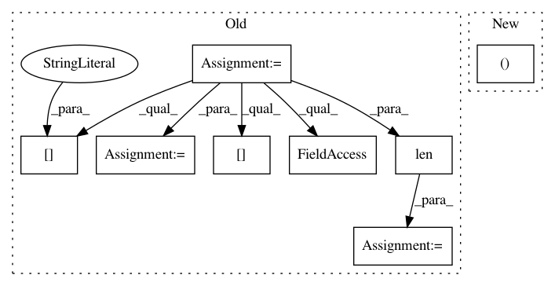

cb413bcf7b58223c6c4335f2eaaf3dc53c0b0c53,train.py,,main,#,190
Before Change
device = torch.device("cuda" if opt.cuda else "cpu")
//========= Loading Dataset =========//
data = pickle.load(open(opt.data, "rb"))
opt.max_token_seq_len = data["settings"].max_len
opt.src_pad_idx = data["vocab"]["src"].vocab.stoi[Constants.PAD_WORD]
opt.trg_pad_idx = data["vocab"]["trg"].vocab.stoi[Constants.PAD_WORD]
opt.src_vocab_size = len(data["vocab"]["src"].vocab)
opt.trg_vocab_size = len(data["vocab"]["trg"].vocab)
training_data, validation_data = prepare_dataloaders(data, device, opt.batch_size)
//========= Preparing Model =========//
if opt.embs_share_weight:
After Change
if opt.data_pkl:
training_data, validation_data = prepare_dataloaders(opt, device)
elif all((opt.train_path, opt.val_path)):
training_data, validation_data = prepare_dataloaders_from_bpe_files(opt, device)
else:
raise
In pattern: SUPERPATTERN
Frequency: 3
Non-data size: 8
Instances
Project Name: jadore801120/attention-is-all-you-need-pytorch
Commit Name: cb413bcf7b58223c6c4335f2eaaf3dc53c0b0c53
Time: 2019-12-05
Author: jadore801120@gmail.com
File Name: train.py
Class Name:
Method Name: main
Project Name: DistrictDataLabs/yellowbrick
Commit Name: 870022ab7abce46f9bff47c8a9c787808a630e59
Time: 2019-01-30
Author: benjamin@bengfort.com
File Name: tests/test_features/test_importances.py
Class Name: TestFeatureImportancesVisualizer
Method Name: test_integration_feature_importances
Project Name: DistrictDataLabs/yellowbrick
Commit Name: 870022ab7abce46f9bff47c8a9c787808a630e59
Time: 2019-01-30
Author: benjamin@bengfort.com
File Name: tests/test_features/test_importances.py
Class Name: TestFeatureImportancesVisualizer
Method Name: test_integration_quick_method